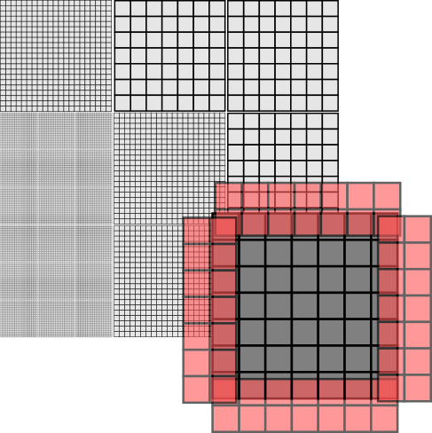
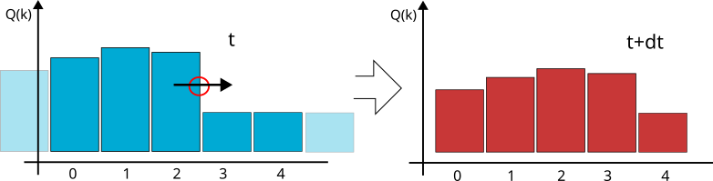
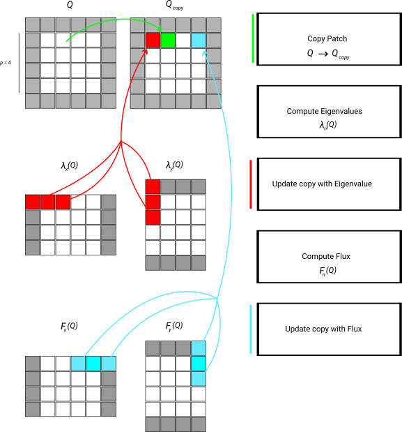

This page is a crude run-through through the Finite Volumes numerical scheme as we find it in ExaHyPE. It covers the basics without most of the actual maths that you find in textbooks. In a first run through the tutorials, it might be reasonable to skip this page, to continue with some hands-on examples and then to return to this description once you have a code up and running and want to deep dive into the methodology.
ExaHyPE's Finite Volume scheme is based upon block-structured Cartesian meshes. All Finite Volume solvers work with blockstructured AMR: They embed \(p \times p\) patches into the octants (cells of the spacetree). To avoid confusion, I prefer to use the term volume for the cells within the patch, as cell would be ambigous given that we construct the host mesh from spacetree cells.

With the Finite Volume methods, we only have single-shot methods at the moment. That is, Peano runs over the octants of the mesh, i.e. the patches. Per patch, it calls and ExaHyPE update kernel, which takes the patch and moves it forwards in time by a given \( \Delta t \). ExaHyPE is shipped with several update schemes. You can obviously also write your own numerical scheme manually, or you employ ExaHyPE's kernel domain-specific language (DSL).
Storage scheme
Every patch has to depends upon its neighbouring, i.e. face-connected patches. To be able to do this, ExaHyPE passes a
\( (p+2N)^d \) patch into a kernel. The p is the number of volumes per patch. The d is the dimension, i.e. two or three. The \( N \geq 1 \) is a halo around the cell. Different Finite Volume schemes have different halo sizes. You may assume that ExaHyPE befills these halo values with valid data from the neighbours, i.e. their synchronisation is none of the kernel's business. The input is called \( Q_{in} \) from hereon. The kernel returns a \( (p+2 N)^d \) with the new time step's data. It is called \( Q_{out} \).
Here are some details about the data used within the kernels:
- The halo data, i.e. the \( N \) layer around the patch is automatically befilled. However, we only maintain the face-connected data. Consequently, the diagonal (corners) do not exist. To make the whole logic easier, the \( Q_{in} \) nevertheless hold these data. They contain garbage. Example: In a \( 7 \times 7 \) patch world with \( N=2 \), we have 49 volumes in the core centre, surrounded by \( 2d \cdot (N \cdot p^{d-1}) = 4 \dot (2 \dot 7) \) face-connected values. The \( 4 \cdot (2 \cdot 2 ) \) corners of the halo do not hold any meaningful data. Nevertheless, we let \( Q_{in} \) holds a \( (7+2\cdot 2) \) volumes
- The volumes within \( Q_{in} \) and \( Q_{out} \) are ordered lexicographically.
- The data are stores as array of structs (AoS).
- If a PDE is described by \( K_{pde} \) real values subject to the wave equations and \( K_{aux} \) auxiliary variables (material parameters), then the \( Q_{in} \) contains \( K_{pde} + K_{aux} \) values (degrees of freedom) per volume. The \( Q_{out} \) however contains only the \( K_{pde} + K_{aux} \) values, too, but the \( K_{aux} \) material parameters do not evolve in time and therefore are the same as in \( Q_{in} \).
- Besides \( Q_{in} \) and \( Q_{out} \) a kernel is given the current time \( t \) and the time step size \( \Delta t \).
- We never write a kernel for only one patch. We always write kernels that can advanced multiple patches in one go. So the "update one patch" is a special case.
Finite Volumes in a nutshell
In Finite Volumes, we assume that each voxel holds exactly one value per PDE quantity. We assume that the solution is constant within the volume.

In the 1d illustration above, we have a patch with \( p=5 \) volumes, one quantity and a halo of one. That is, we are given a \( Q_{in} \) with 7 values and return 5 new values for the next time step. So now we do the math:
If the solution per volume is constant, nothing happens within the volume per time step. The solution inside is kind of "stable". If something happens with a volume, i.e. if the solution grows or goes down, then this must be due to stuff flowing in or out of the voxel. We can write this down as integral over each volume V:
\(
\int _V Q_k(t+\Delta t) dx = \int _V Q_k(t) dx + \Delta t \cdot \int _V \partial _t Q_k(t) dx
\)
We have already used an explicit Euler time integrator here. Next, we make the formula a little bit simpler exploiting the fact that a volume shall have the volume length \( h \) and each volume is a square or cube, respectively. Once again, it helps that the solution is constant per volume.
\begin{eqnarray*}
\int _V Q_k(t+\Delta t) dx & = & \int _V Q_k(t) dx + \Delta t \cdot \int _V \partial _t Q_k(t) dx \\
h^d Q_k(t+\Delta t) & = & h^d Q_k(t) dx + \Delta t \cdot \int _V \partial _t Q_k(t) dx \\
h^d Q_k(t+\Delta t) & = & h^d Q_k(t) dx + \Delta t \cdot \int _V \nabla F(Q_k(t)) + S(Q_k) dx
\end{eqnarray*}
In the last line, we now insert our PDE written as
\(
\partial _t Q(t) = \nabla F(Q(t)) + S(Q)
\)
and use the divergence theorem:
\begin{eqnarray*}
h^d Q_k(t+\Delta t) & = & h^d Q_k(t) dx + \Delta t \cdot \int _V \nabla F(Q_k(t)) + S_k(Q) dx \\
Q_k(t+\Delta t) & = & Q_k(t) dx + \frac{\Delta t}{h^d} \cdot \left( \oint _{\partial V} (F(Q_k(t)),n) dS(x) + h^d \cdot S(Q_k) \right)
\end{eqnarray*}
So in principle, we now know exactly what to do:
- Loop over all volumes in the patch.
- Copy its \( Q_{in} \) in \( Q_{out} \).
- Add the source term \( S(Q_k) \) scaled by the time step size.
- Add this additional term of inflow or outflow. Again, we can exploit the fact that the normal n has only one entry with \( \pm 1 \) (so F returns a vector, but we pick only one entry and scale it maybe with a -1). And then we scale the whole thing with a \( h^{d-1} \) as we integrate over a surface, but the straightaway divide by \( h^d \).
The problem is that we don't know the F value at the voxel. That thing doesn't really exist. The solution has no value there, as it jumps. So we have to approximate this term \( F(Q) \) at the voxel boundary with a numerical flux.
Rusanov
One of the simlest flux is Rusanov:
\(
{F|}_{n}(Q) \approx \frac{1}{2} (F_n^+(Q) + F_n^-(Q)) - (Q^+ - Q^-) \cdot \text{max}(\lambda_{max,n}(Q^+),\lambda_{max,n}(Q^-))
\)
The flux on a face \( {F}_{n}(Q) \) is the average of the flux within the left adjacent cell and the right adjacent cell. This average is denoted by a red circle in the sketch above. If we only used the average, we would get a solution where shocks smear out quickly. In the sketch above, the wave/shock travels from left to right, so it makes sense to assume that actually way more flow goes left-right than right-to-left. Averaging is not a good idea. So we take the difference \( Q^+ - Q^- \), we know how to correct the numerical flux. Take into account that the "remaining" eigenvalues are all positive for a stricly hyperbolic system. Globally, there is one negative eigenvalue but that one corresponds to the time dimension and is already taken care of.
Yet, the speed matters: If the flow is very slow, then we only should correct the average by a tiny amount. If the wave travels very fast, we should significantly take this solution gradient into account. The wave speed it approximated/bounded by the maximum eigenvalue along the direction of interest. Again, we cannot evaluate the maximum eigenvalue on the face directly, but we only are interested in the maximum eigenvalue. Therefore, we can evaluate the directional eigenvalue in the left and right volume and again take the maximum of those guys.
An implementation
Our discussion of an implementation of the scheme - which can be read as blueprint of our compute kernels in ExaHyPE - is inspired by
@article{10.1145/3406835,
author = {Uphoff, Carsten and Bader, Michael},
title = {Yet Another Tensor Toolbox for Discontinuous Galerkin Methods and Other Applications},
year = {2020},
issue_date = {December 2020},
publisher = {Association for Computing Machinery},
address = {
New York, NY, USA},
number = {4},
issn = {0098-3500},
url = {https:
doi = {10.1145/3406835},
abstract = {The numerical solution of partial differential
equations is at the heart of many grand challenges in supercomputing. Solvers based on high-
order discontinuous Galerkin (DG) discretisation have been shown to
scale on large supercomputers with excellent performance and efficiency
if the implementation exploits all levels of parallelism and is tailored to the specific architecture. However, every year
new supercomputers emerge and the list of hardware-specific considerations grows simultaneously with the list of desired features in
a DG code. Thus, we believe that
a sustainable DG code needs an abstraction layer to implement the numerical
scheme in
a suitable language. We explore the possibility to abstract the numerical
scheme as small tensor operations, describe them in
a domain-specific language (DSL) resembling the Einstein notation, and to map them to small General Matrix-Matrix Multiplication routines. The compiler
for our DSL implements classic optimisations that are used
for large tensor contractions, and we present novel optimisation techniques such as equivalent sparsity patterns and optimal
index permutations
for temporary tensors. Our application
examples, which include the earthquake simulation software SeisSol, show that the
generated kernels achieve over 50\% peak performance of
a recent 48-core Skylake system
while the DSL considerably simplifies the implementation.},
journal = {ACM Trans. Math. Softw.},
month = oct,
articleno = {34},
numpages = {40},
keywords = {ADER-DG, Tensor operations,
finite element method, high-performance computing}
}
const float const float const float struct part *restrict struct part *restrict const float a
str scheme
main code scheme="Gauss_Legendre"
This code is taken from the original ExaHyPE project written by colleagues from the University of Tre...
Scalar volume(const Vector< Size, Scalar > &vector)
Computes the volume of the tetrahedron spanned by the Cartesian unit vectors scaled by the correspond...
who write down the algorithm as a sequence of tensor multiplications, i.e. generalised matrix-matrix equations. This does not work in ExaHyPE 1:1 as we support non-linear PDEs in the generic kernel formulations. However, we can use similar operator concatenation ideas.
We demonstate the data flow by means of the simplified numerical flux which only takes the average. This algorithm consists of a strict sequence of steps:
- We evaluate \( S(Q) \) per voxel. The output is stored in a \( p \times p \times p \) patch where each volume holds \( K_{pde} \) values. The output is called \( Q_{S} \).
- We evaluate \( F(Q)_x \) per voxel. That the flux in one direction. The output is stored in a \( (p+2N) \times p \times p \) patch where each volume holds \( K_{pde} \) values. The output is called \( Q_{F_x} \). Note that this is the core patch extended by the halo in one direction!
- We evaluate \( F(Q)_y \) per voxel. That the flux in one direction. The output is stored in a \( p \times (p+2N) \times p \) patch where each volume holds \( K_{pde} \) values. The output is called \( Q_{F_y} \). Note that this is the core patch extended by the halo in one direction!
- We evaluate \( F(Q)_z \) per voxel. That the flux in one direction. The output is stored in a \( p \times p \times (p+2N) \) patch where each volume holds \( K_{pde} \) values. The output is called \( Q_{F_z} \). Note that this is the core patch extended by the halo in one direction!
Now all temporary data are available. We prepare the output and then add the PDE contributions. This part is basically a stencil variant. Or we can write it down as a tensor-vector product which is added to \( Q_{out} \):
- We copy over \( Q_{in} \) into \( Q_{out} \). Per voxel, we have o copy \( K_{pde} + K_{aux} \) unknowns.
- Add to each voxel \( Q_{in}[x,y,z] \) the value \( \Delta t \cdot Q_{S}[x,y,z] \). This loop runs over \( K_{pde} \) unknowns only. The \( K_{aux} \) entries are not touched.
- Add to each voxel \( Q_{in}[x,y,z] \) the value \( \frac{\Delta t}{2h} \cdot (Q_{F_x}[x-1,y,z]+Q_{F_x}[x,y,z]+Q_{F_x}[x,y,z]+Q_{F_x}[x+1,y,z])\). This loop runs over \( K_{pde} \) unknowns only. The \( K_{aux} \) entries are not touched.
- Add to each voxel \( Q_{in}[x,y,z] \) the value \( \frac{\Delta t}{2h} \cdot (Q_{F_y}[x,y-1,z]+2Q_{F_y}[x,y,z]+Q_{F_y}[x,y+1,z])\). This loop runs over \( K_{pde} \) unknowns only. The \( K_{aux} \) entries are not touched.
- Add to each voxel \( Q_{in}[x,y,z] \) the value \( \frac{\Delta t}{2h} \cdot (Q_{F_z}[x,y,z-1]+2Q_{F_z}[x,y,z]+Q_{F_z}[x,y,z+1])\). This loop runs over \( K_{pde} \) unknowns only. The \( K_{aux} \) entries are not touched.
The extension to Rusanov for example is straightforward, as long as we take into account that our "stencil" here has to incorporate the max function. Below is schematic illustration of the data flow:

Note that the scheme as well as the description lack an important detail: Every single step is to be done over a set of patches, as we update multiple patches in one go. In the kernels, we can write down this logic as a sequence of operators, but once you employ our xDSL kernel language, the underlying kernel generator will permute and fuse all the loops and operations.